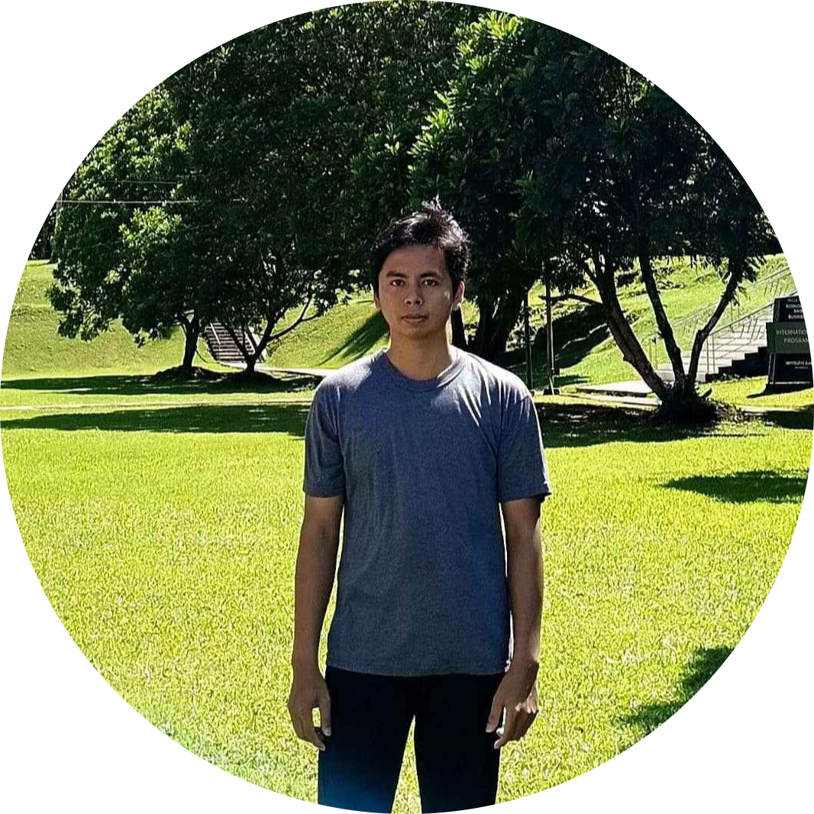

My name is
Yazel Stepano Tangkeallo
Lulusan S1 Informatika dari Universitas Klabat dengan pengalaman kerja selama 1 tahun sebagai Staff IT di perusahaan Tour & Travel. Berpengalaman dalam pengembangan dan pengelolaan website perusahaan, mulai dari pengembangan front-end dan back-end hingga pengelolaan database dan integrasi API. Selain pengembangan website, juga memiliki pengalaman dalam perawatan, pengelolaan, dan troubleshooting perangkat IT serta jaringan komputer untuk mendukung kelancaran operasional perusahaan. Terbiasa bekerja secara individu maupun dalam tim, cepat belajar, dan mampu memberikan solusi terhadap berbagai permasalahan teknis.
